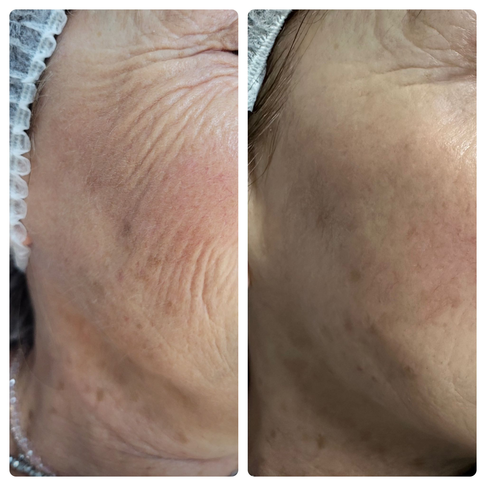
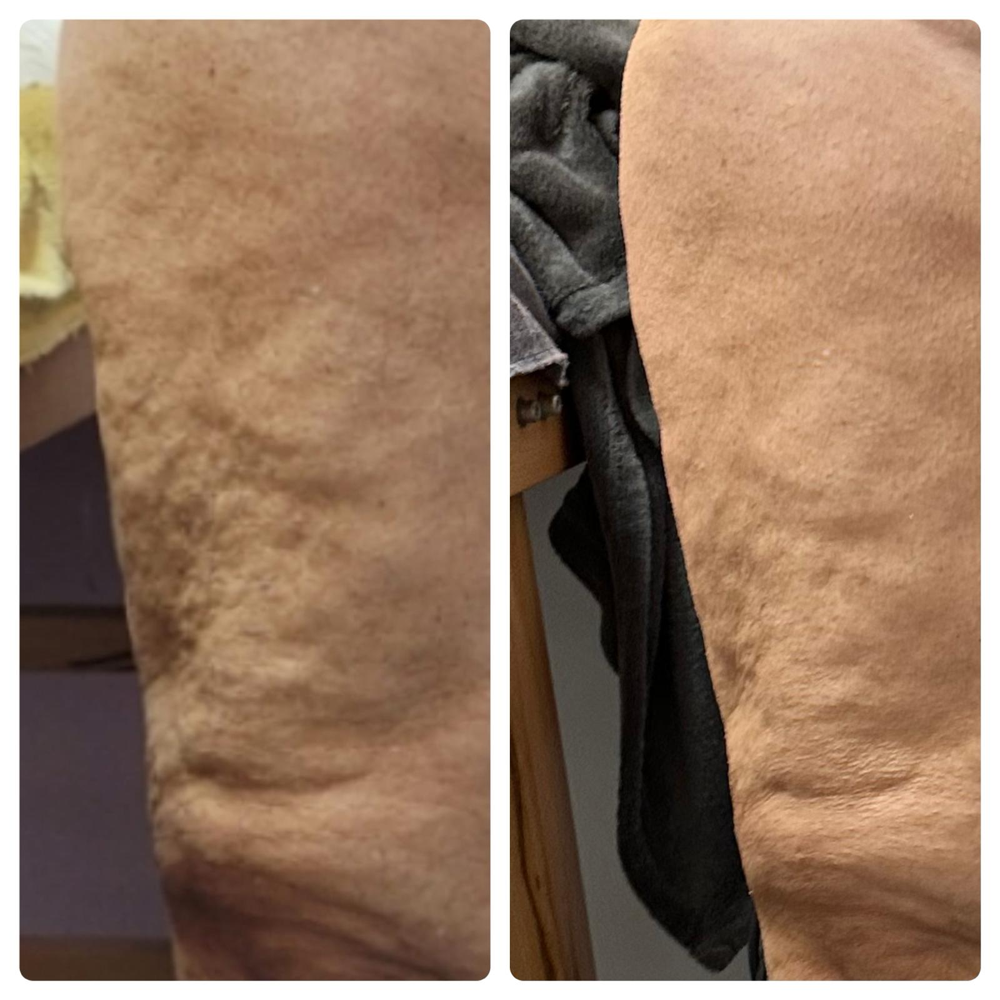

Trattamenti viso e corpo
Shape 4 Plus

Depilazione OVER DEPY A

Stimolazione elettronica

Hartur One
Shape 4 Plus
Presso il Centro Estetico Maristella vengono eseguiti trattamenti per il viso e il corpo con l'utilizzo del 4-Shape Plus, un macchinario innovativo per il ringiovanimento in quanto permette di utilizzare 4 differenti tecnologie per snellire, modellare, tonificare, drenare e donare un effetto di lifting a viso e corpo.
Le 4 diverse tecnologie utilizzate sono: shaping wave, mesoporazione senza aghi, draining e radiofrequenza con bioeffect.
Shaping wave
E' molto efficace per chi ha cellulite e accumuli di grasso
- Entra in risonanza con le membrane cellulari
- Aumenta la permeabilità cellulare interagendo sui recettori
- Interagisce con adipe e cellulite in tutte le sue manifestazioni
- Può arrivare ad una profondità di 4cm
- Non interagisce con organi interni
- No denaturazione del DNA come altri sistemi

Mesoporazione
Può essere eseguita su viso e corpo e consente la penetrazione dei principi attivi del prodotto cosmetico
- Schiarisce le macchie di origine melanica
- Riporta il giusto livello di idratazione sulla cute
- Lenisce i rossori e rinforzare il microcircolo
- Permette di rassodare e liftare viso e corpo
- Riduce gli inestetismi della cellulite
- Riduce gli accumuli adiposi localizzati

Draining
Migliora il circolo artero-venoso linfatico, favorisce lo smaltimento delle tossine e riduce le aderenze tessutiali.
- Favorisce il ritorno linfatico e il riassorbimento dei liquidi extracellulari e lo smaltimento delle tossine
- Stimola la microcircolazione e l'afflusso sanguigno verso la superficie cutanea, apportando nutrimento e ossigeno alla cute con conseguente aumento dei processi metabolici e rigenerativi.
- Massaggia il connettivo migliorando il trofismo cutaneo e ridando elasticità ai tessuti
- Determina un miglioramento del microcircolo artero-venoso e linfatico
- Stimola la produzione di fibre elastiche e di collagene per ridare tono ed elasticità ai tessuti
- Migliora l'assorbimento dei prodotti successivamente applicati sulla cute

Bioradiolift
Stimola l'attività cellulare e favorisce la mobilizzazione dei liquidi in eccesso.
- Stimola il microcircolo e aumenta il flusso ematico
- Azione antiedemigena
- Aumenta il flusso ematico locale con migliore utilizzo dell'ossigeno da parte delle cellule per vasodilatazione arteriolare e capillare, con conseguente azione eutrofica ed antiflogistica
- Aumenta la temperatura dei tessuti trattati, migliorando il trofismo cutaneo accelera i processi metabolici cellulari per stimolazione del ricambio elettrolitico e favorisce la detossinazione e l'eliminazione delle tossine. Ha un'azione antibatterica locale
- Contrasta l'invecchiamento cutaneo favorendo i processi rigenerativi e riparativi della cute
- Stimola il sistema immunitario per aumento della produzione di anticorpi


Risultati ottenuti dopo 15 trattamenti viso con Shape 4 Plus
Risultati ottenuti dopo circa 20 trattamenti gambe con combinazione tra Shape 4 Plus e Mad for Beauty
Depilazione con OVER DEPY A
L'apparecchiatura OVER DEPY A per la depilazione, basa la sua azione depilante sull'effetto del calore che si sviluppa vicino all'elettrodo puntiforme. Infatti, il rapido passaggio della corrente elettrica ad alta frequenza, concentrandosi nel piccolo elettrodo puntiforme, stimola le vicine cellule del follicolo pilifero a vibrare e a essere distrutte per effetto del calore.
Stimolazione elettronica a frequenza controllata
Risultati sorprendenti grazie alla stimolazione elettronica a frequenza controllata. La gamma di frequenze della nuova serie di strumenti DAMIA consente applicazioni particolari e risultati impressionanti.
E' caratteristica di questo trattamento una stimolazione che risulta essere ottimale nei casi di insufficienza circolatoria e conseguente alterazione del ricambio cellulare (seborrea, acne, invecchiamento precoce della cute). L'aumento della circolazione cutanea favorisce l'azione delle sostanze attive contenute nelle composizioni cosmetiche. Ha inoltre un'azione energetica, che favorisce un più accelerato ricambio, stimola la circolazione del sangue, e facilita la disintossicazione.
L'alta frequenza aumenta l'attività ghiandolare, stimola la circolazione sanguigna, ha un'azione germicida, aiuta un assorbimento profondo dei principi attivi cosmetici, migliora i processi di ossido-riduzione. Ha un'azione cicatrizzante e rigenerante.
L'elettrodo a cipolla o a cipollina, particolarmente indicato nel massaggio delle piccole parti come solchi labbiali, naso, zampe d'oca, orbicolari, può essere usato anche per un'azione rassodante nei contorni del viso. Garantisce una perfetta penetrazione dei prodotti Damia, opportunamento ionizzati.
Hartur One
L'H1V2 è la nuova versione del famoso HARTUR-ONE, apparecchio ad alta tecnologia per il linfodrenaggio elettronico, il quale dona benefici a tutto il corpo e trova applicazione nei diversi campi della medicina, dell'estetica e dello sport.
Attraverso una stimolazione elettrica sequenziale, agevola e ripristina la circolazione linfatica con un riassorbimento dei liquidi interstiziali, inoltre, determina un aumento del tono muscolare in condizioni del tutto fisiologiche e nel totale rispetto del ritmo cardiaco.
Questa nuova tecnica favorisce il metabolismo delle cellule adipose ed elimina il ristagno locale dei liquidi, effettuando un drenaggio venoso linfatico che determina l'eliminazione delle scorie trattenute nei tessuti.
Il vasto campo d'applicazione comprende: la cellulite (con l'eliminazione delle cause che la determinano), il riassorbimento dei ristagni edematici ed adiposi, il trattamento riabilitativo post operatorio nei casi di mastectomia e rinoplastica, le traumatologie e/o patologie sportive, la tonificazione delle masse muscolari ed altre svariate applicazioni.
L'apparecchio è programmabile in tutte le sue funzioni e dispone di un sistema di sincronismo cardiaco che permette di ottenere una migliore personalizzazione dei trattamenti.
La totale assenza di controindicazioni rende l'apparecchio particolarmente adatto per soggetti che presentano problemi di fragilità vasale e vene varicose, ove è sconsigliata l'azione meccanica o manuale.
Sin dalla prima applicazione è visibile una riduzione dell'inestetismo ed il risultato raggiunto si mantiene nel tempo.
L'apparecchio HARTUR-ONE drena con un'azione elettronica (non meccanica) i liquidi intra-vasali e di conseguenza quelli interstiziali. Ciò è possibile tramite particolari placche collegate all'apparecchio alle quali vengono inviati degli impulsi elettrici in certe zone del corpo prese in considerazione.
Le placche, infatti, vengono poste in punti nei quali si trovano dei recettori nervosi specifici che, se stimolati, animano il movimento muscolare e di conseguenza la circolazione sanguigna e linfatica. I suddetti punti sono chiamati punti linfodrenanti.
HARTUR-ONE, grazie al nuovo sistema di sincronismo cardiaco, risponde ciclicamente nel modo più preciso ed efficace.
Con lo strumento HARTUR-ONE, la stimolazione elettrica sequenziale aumenta il tono muscolare in condizioni del tutto fisiologiche esattamente come si verifica nel corso dell'attività fisica.
L'aumento del tono muscolare determina:
- Aumento del trofismo muscolare.
- Aumento della stabilità articolare.
- Aumento del trofismo osseo.
- Aumento della circolazione sanguigna.
- Aumento della circolazione linfatica.
- Aumento dell'ossigenazione e della depurazione cutanea.
Sin dalla prima applicazione è visibile una riduzione dell'edema che si manterrà nel tempo. Per questi motivi HARTUR-ONE trova applicazione nei più svariati campi della medicina e dell'estetica.
I risultati sono evidenti sin dalla prima applicazione.
HARTUR-ONE aumenta il tono muscolare in condizioni del tutto fisiologiche.
L'apparecchio induce una contrazione muscolare ritmica ed in sequenza nei diversi segmenti corporei ai quali vengono applicate le placche. Tale movimento è fisiologico in quanto è il muscolo che attivamente si contrae.
In natura, il muscolo si contrae dopo aver ricevuto lo stimolo elettrico dalla fibra nervosa per cui realizza la sequenza:
fibra nervosa —> stimolo elettrico —> contrazione muscolare.
Nel nostro caso HARTUR-ONE genera lo stimolo elettrico e attraverso le placche lo trasmette al muscolo realizzando la sequenza:
HARTUR-ONE —> stimolo elettrico —> contrazione muscolare.